Kézikönyv az admin felülethez
Előadások, rendelések és hozzáférések kezelése – a mindennapi működéshez
Ez a kézikönyv a platform kezelését az üzemeltető szemszögéből írja le. A beállítás és a technikai részletek a külön telepítési kézikönyvben találhatók. Az ábrák kitalált adatokkal készült példa-előadásokat és példafiókokat mutatnak.
Tartalomjegyzék
- ★Gyors kezdés hat lépésben
- 1Belépés az admin felületre
- 2Az áttekintés
- 3Előadások létrehozása és szerkesztése
- 4Leckék és médiafájlok
- 5Közzététel, archiválás, törlés
- 6Rendelések és hozzáférések
- 7Visszatérítések és elállás
- 8Vásárlók és fiókok
- 9Események és naplók
- 10Az értékesítés szüneteltetése
- 11Biztonsági mentés
- 12Egy tipikus folyamat
- 13A változtatások hatásai
- 14Az admin felület funkciói
- 15Súgó és gyakori üzenetek
★ Gyors kezdés hat lépésben
- Belépés: Nyisd meg az admin címet, amelyet a beállításkor kaptál, és lépj be az admin fiókoddal (1. fejezet).
- Előadás létrehozása: Kattints az Új előadás gombra, add meg a címet, a leírást, a pénznemet és az árat, majd kattints a Mentés gombra. Az előadás most piszkozat, és a vásárlók számára nem látható (3. fejezet).
- Leckék hozzáadása: Az Új lecke hozzáadása résznél hozz létre szöveges, videós, PDF- vagy hangleckéket, és szükség esetén töltsd fel a fájlt (4. fejezet).
- Az előnézet kialakítása: Tölts fel borítóképet, és a Mit fogsz megtanulni résznél add meg a tanulási célokat (3. fejezet).
- Közzététel: Kattints a Kész gombra, és erősítsd meg az Igen gombbal. Ettől kezdve az előadás mindenki számára látható és megvásárolható (5. fejezet).
- Napi ellenőrzés: Az áttekintésen láthatók a mutatók, az Ellenőrzendő fizetések, valamint az összes rendelés és esemény (2., 6. és 9. fejezet).
1 Belépés az admin felületre
Az admin felület a platformod külön oldala. Nyisd meg az admin címet, amelyet a beállításkor kaptál, és lépj be az admin fiókod e-mail-címével és jelszavával.
- Add meg az E-mail-cím és a Jelszó mezőt. A szem ikonnal a jelszót rövid időre megjelenítheted.
- Kattints a Belépés gombra. Ezután az Előadásaim áttekintést látod.
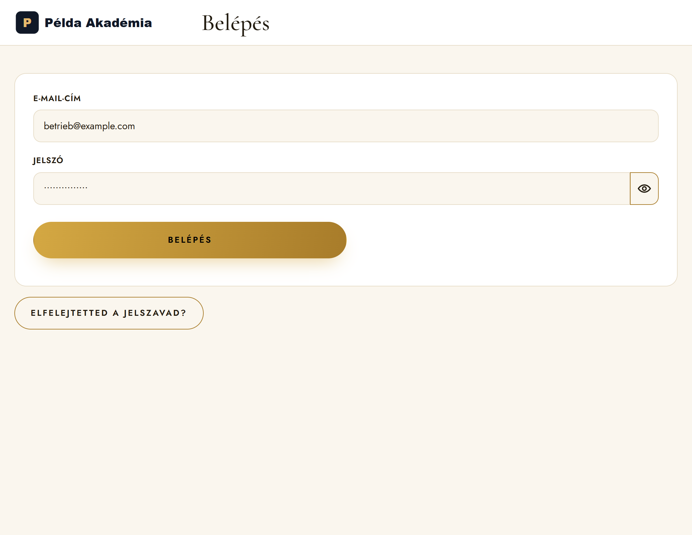
- Hibás adatok: A platform ezt jelzi: „Hibás e-mail-cím vagy jelszó.” Minden próbálkozás bekerül az Admin-bejelentkezések naplóba (9. fejezet).
- Túl sok sikertelen próbálkozás: A belépés ideiglenesen zárolva lesz („Túl sok próbálkozás. Kérlek, várj 15 percet, és próbáld újra.”).
- Elfelejtett jelszó: Az űrlap alatti Elfelejtetted a jelszavad? hivatkozás a jelszó-visszaállítás általános oldalára vezet. E-mailben kapsz egy hivatkozást.
- Vásárlói fiókok: Aki normál vásárlói fiókkal lép be, csak ezt látja: „Nincs jogosultságod.”
- Kilépés: Minden admin oldal jobb felső sarkában ott van a Kilépés.
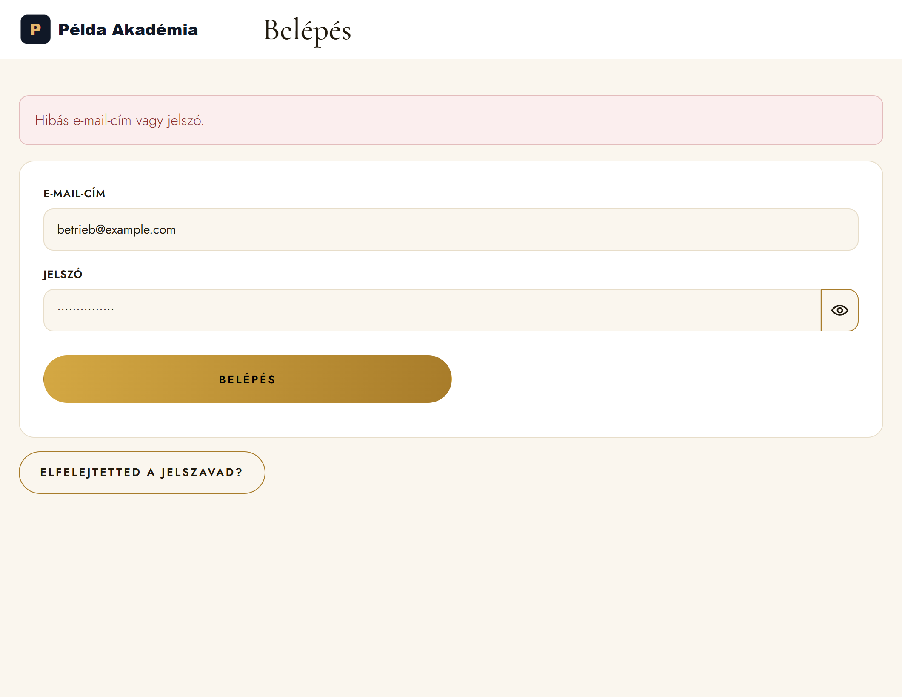
2 Az áttekintés
Belépés után az Előadásaim áttekintést látod. Fentről lefelé ezeket találod: mutatók, a fő gombok, az összes előadás, az ellenőrzendő fizetések, a nyitott elállások, a Rendelések és események lista, legalul pedig az eszközök.
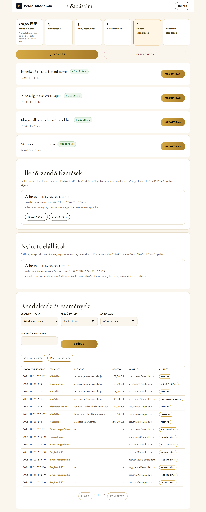
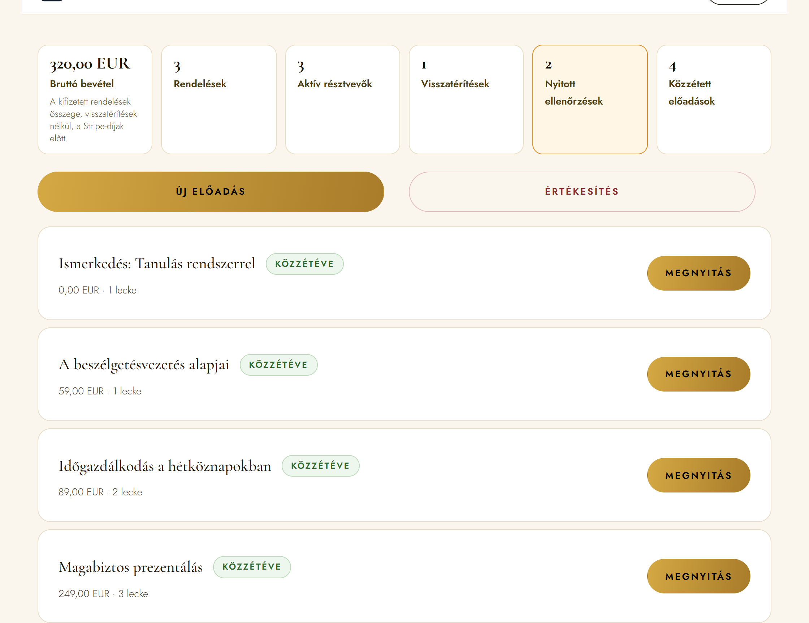
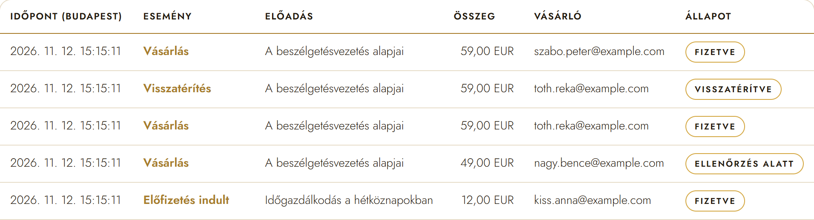
Mutatók
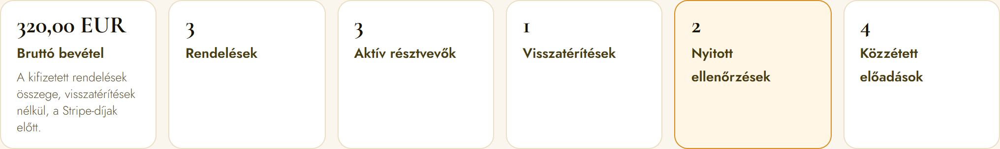
| Mutató | Mit számol |
|---|---|
| Bruttó bevétel | A kifizetett rendelések összege, pénznemenként. A visszatérített rendelések nem számítanak bele. A fizetési szolgáltató díjai nincsenek levonva. |
| Rendelések | A „fizetve” állapotú rendelések száma (az ingyenes előadások nem hoznak létre rendelést). |
| Aktív résztvevők | Azoknak a fiókoknak a száma, amelyeknek legalább egy előadáshoz érvényes hozzáférésük van. |
| Visszatérítések | A „visszatérítve” állapotú rendelések száma. |
| Nyitott ellenőrzések | Az ellenőrzendő fizetések, valamint azok az elállások, amelyeknél a visszatérítés még folyamatban van vagy nem sikerült. A szám megegyezik az Ellenőrzendő fizetések és a Nyitott elállások mező bejegyzéseinek számával. Ha a szám nagyobb 0-nál, a mező színesen ki van emelve. |
| Közzétett előadások | A „Közzétéve” állapotú előadások száma. |
Fő gombok és az előadások listája
Az Új előadás létrehoz egy előadást (3. fejezet). Az Értékesítés megnyitja az értékesítés szüneteltetésének oldalát (10. fejezet). Alattuk láthatók az előadások, a legújabb elöl, állapottal (Piszkozat, Közzétéve vagy Archiválva), árral és a leckék számával. A Megnyitás gombbal jutsz az előadás oldalára.
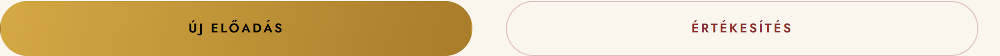
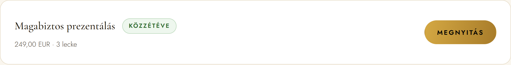
Eszközök
Az oldal végén találhatók az eszközök, többek között az Előadáscsomag importálása (3. fejezet), a Stripe-egyeztetés és az Admin-bejelentkezések (9. fejezet), valamint a Biztonsági mentés (11. fejezet).
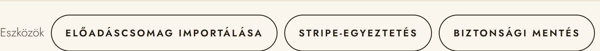
3 Előadások létrehozása és szerkesztése
Új előadás létrehozása
- Az áttekintésen kattints az Új előadás gombra.
- Töltsd ki a mezőket:
- Cím (kötelező, legfeljebb 200 karakter) és Leírás (legfeljebb 5000 karakter),
- Pénznem: HUF (Ft) vagy EUR (€). A pénznem később nem módosítható.
- Ár az egyszeri vásárláshoz: EUR esetén legfeljebb két tizedesjeggyel, vesszővel vagy ponttal (például 19,99 vagy 19.99); HUF esetén csak egész forint (például 19900). Az üres mező példát mutat (EUR 49,00, HUF 19900). A 0 jelentése: ingyenes előadás.
- Előfizetési díj (üresen hagyva: nincs előfizetés) és Számlázási időszak (Havonta vagy Évente).
- Kattints a Mentés gombra. A platform ezt jelzi: „Az előadás elkészült. Most adj hozzá leckéket.”
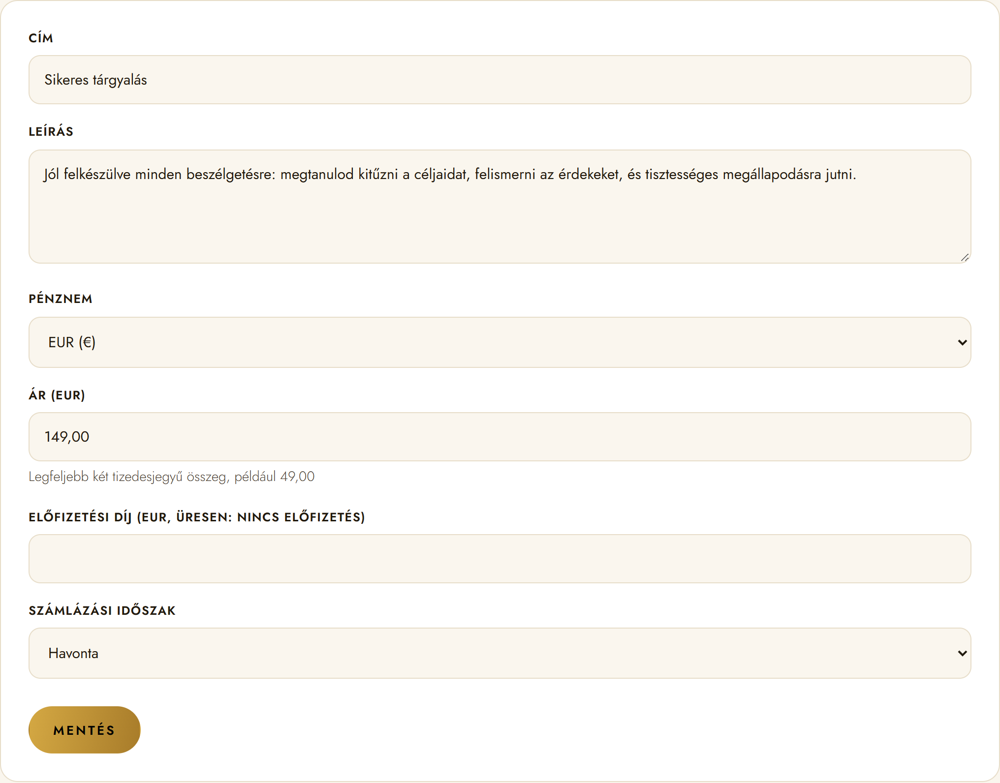
Az új előadás piszkozat: a vásárlók nem látják, és nem vásárolhatják meg, amíg közzé nem teszed (5. fejezet).
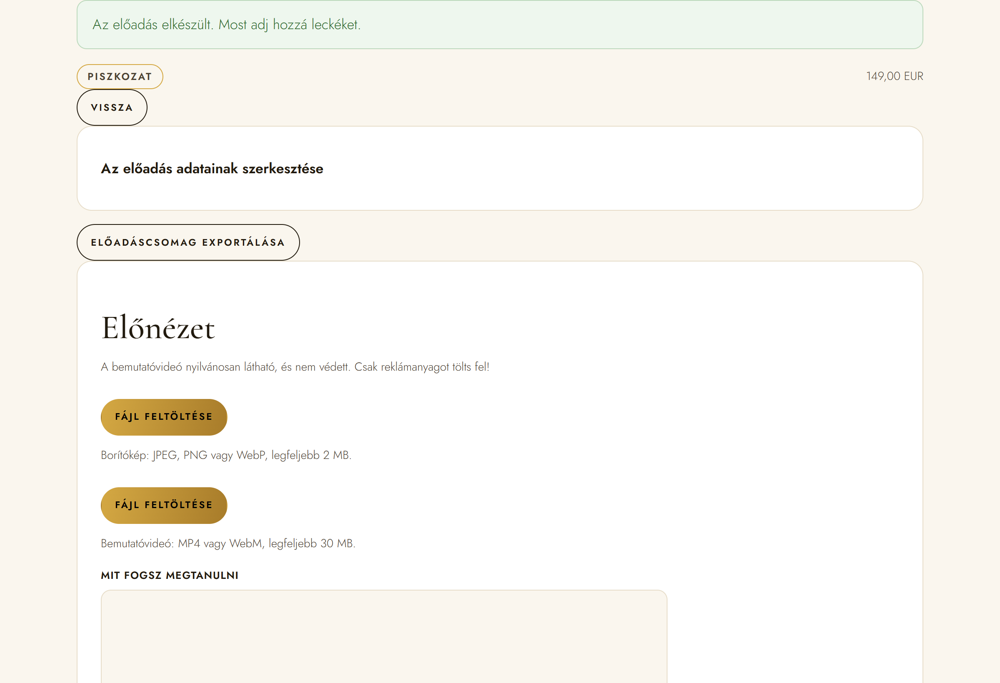
Az árakra vonatkozó szabályok
- Egyszeri vásárlás és előfizetés: Egy előadásnak lehet egyszeri ára és emellett előfizetési díja is. A vásárlók ekkor mindkét lehetőséget látják.
- Előfizetés: Az előfizetési díj és az időszak összetartozik. Az előfizetési díjnak 0-nál nagyobbnak kell lennie.
- Ingyenes: 0 árú előadáshoz nem tartozhat előfizetés („Ingyenes előadáshoz nem adható előfizetés.”).
- Euró: Legfeljebb két tizedesjegy, ezres elválasztó és pénznemjel nélkül (a 19,99 és a 19.99 egyenértékű).
- Forint: HUF esetén csak egész forint adható meg.
Az előadás adatainak szerkesztése
Az előadás oldalán Az előadás adatainak szerkesztése ugyanazt az űrlapot nyitja meg. A cím, a leírás, az ár, az előfizetési díj és az időszak bármikor módosítható; a pénznem mező zárolva van. A Mentés azonnal érvényesíti a módosítást. Hogy egy árváltozás mit jelent a vásárlóknak, azt a 13. fejezet írja le.
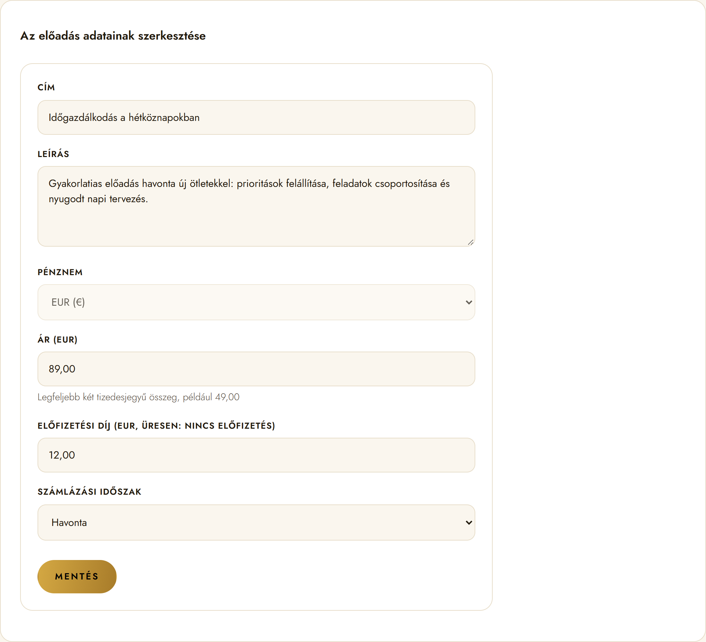
Előnézet: borítókép, bemutatóvideó és „Mit fogsz megtanulni”
Az Előnézet mezőben alakítod ki, mit látnak az érdeklődők az előadás oldalán:
- Borítókép: JPEG, PNG vagy WebP, legfeljebb 2 MB. A Csere visszakérdezés után lecseréli, a Törlés eltávolítja.
- Bemutatóvideó: MP4 vagy WebM, legfeljebb 30 MB. A bemutatóvideó nyilvános és nem védett. Ide csak reklámanyagot tölts fel, soha ne az előadás tartalmát.
- Mit fogsz megtanulni: a tanulási célok, soronként egy (legfeljebb 8 sor, soronként 120 karakter). A Mentés gombbal érvényesítheted.
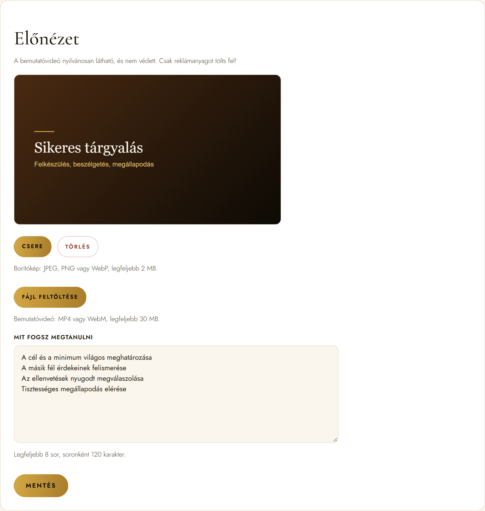
Előadáscsomag importálása és exportálása
Az előadáscsomag egy szöveges csomag az előadás adataival és a leckék szövegeivel. Az Előadáscsomag importálása résznél beilleszted a csomagot, rákattintasz az Ellenőrzés gombra, megnézed az eredményt (cím, a leckék száma, ár, megjegyzések), majd a Piszkozat létrehozása gombbal új piszkozatot hozol létre. A videók és a PDF-ek nincsenek benne; ezeket utána töltöd fel. Egy csomag 1–40 leckét tartalmaz, és legfeljebb 300 KB lehet; egyszerre legfeljebb 50 piszkozat lehet. Ha ugyanazt a csomagot másodszor is importálod, a platform a meglévő piszkozatot nyitja meg. Az előadás oldalán az Előadáscsomag exportálása másolható csomagot készít – csak forintos előadásokhoz.
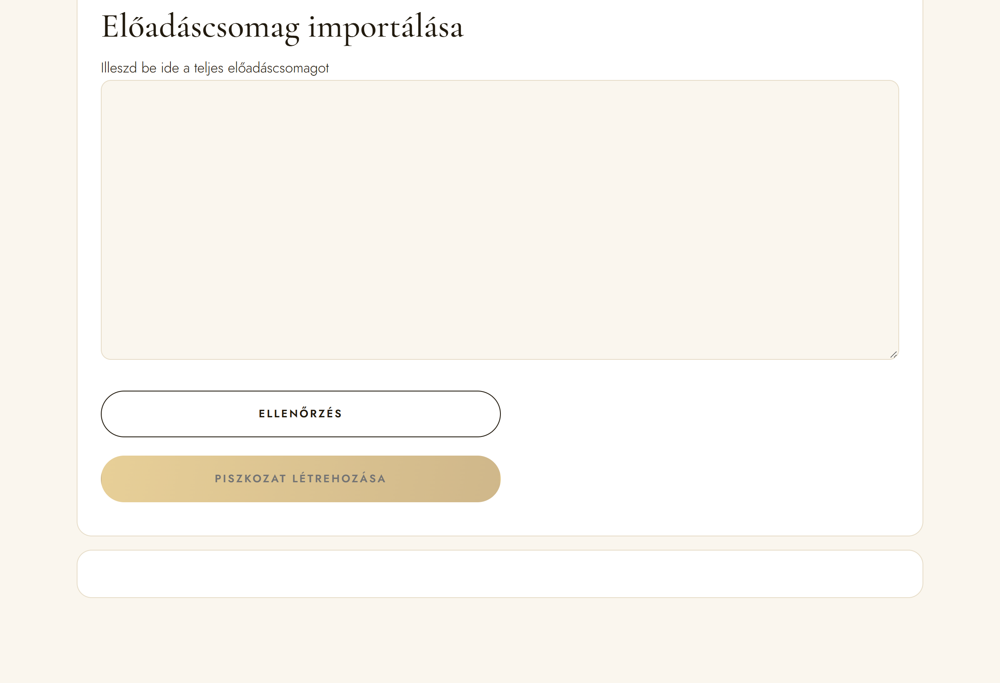
4 Leckék és médiafájlok
Új lecke hozzáadása
- Nyisd meg az előadást, és görgess az Új lecke hozzáadása részhez.
- Add meg a Szakasz (például „Alapok”, nem kötelező), A lecke címe (kötelező) és a Típus mezőt: Szöveg, Videó, PDF vagy Hanganyag.
- A Szöveg mezőben a lecke szövege áll (legfeljebb 8000 karakter). Videó, PDF és hanganyag esetén ez a fájl leírása.
- Kattints a Lecke hozzáadása gombra. A lecke a lista végére kerül.
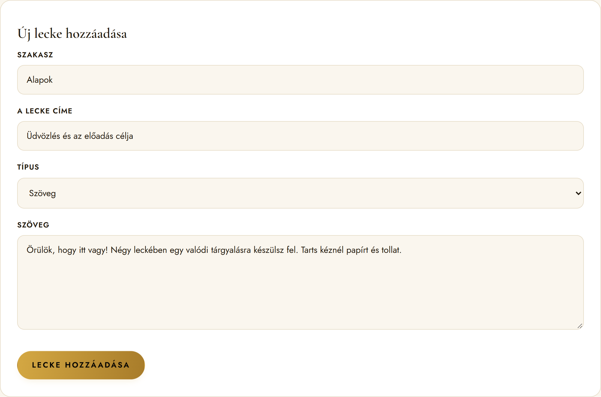
Videó, PDF és hanganyag esetén megjelenik ez a megjegyzés: „A fájlt a lecke létrehozása után tudod feltölteni.”
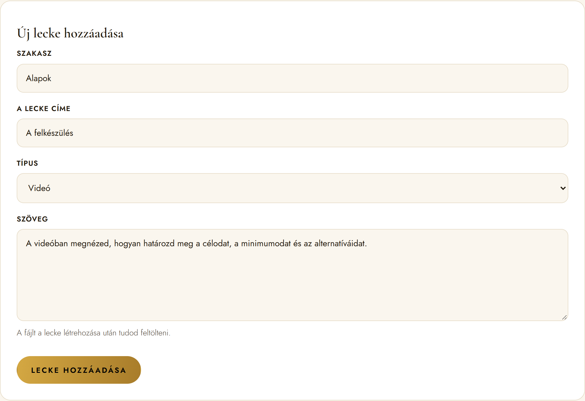
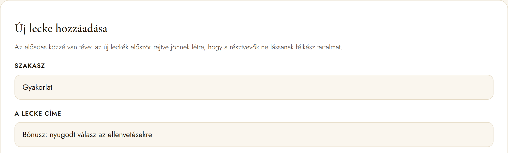
Fájlok feltöltése
A leckénél kattints a Fájl feltöltése gombra, és válaszd ki a fájlt. Egy folyamatjelző sáv mutatja a feltöltést, utána megjelenik a fájl neve és mérete.
| Típus | Engedélyezett fájlok |
|---|---|
| Videó | .mp4, .webm |
| Hanganyag | .mp3, .m4a, .ogg |
- Leckénként egy fájl van. Egy újabb feltöltés lecseréli a régi fájlt.
- A Fájl törlése visszakérdezés után véglegesen eltávolítja a fájlt.
- A megengedett fájlméret be van állítva; ha egy fájl túl nagy, a platform ezt jelzi: „A fájl túl nagy. Legfeljebb … MB tölthető fel.”
- Amíg fájl tartozik a leckéhez, a lecke típusa nem módosítható.
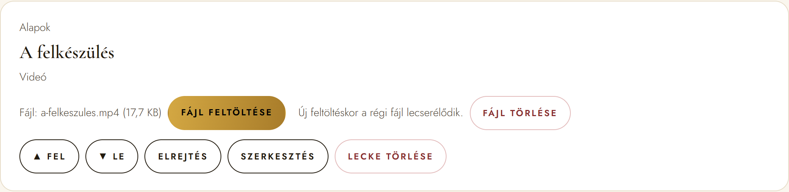
Sorrend, elrejtés, szerkesztés, törlés
- A ▲ Fel / ▼ Le gomb egy hellyel mozgatja a leckét („A sorrend megváltozott.”).
- Az Elrejtés elrejti a leckét a vásárlók elől; a lecke halványan, „Rejtett” jelzéssel jelenik meg. A Megjelenítés ismét láthatóvá teszi.
- A Szerkesztés az oldal alján megnyit egy űrlapot a címhez, a szakaszhoz és a szöveghez.
- A Lecke törlése csak addig jelenik meg, amíg az előadás piszkozat, vagy a lecke rejtett. A lecke és a fájlja véglegesen törlődik.
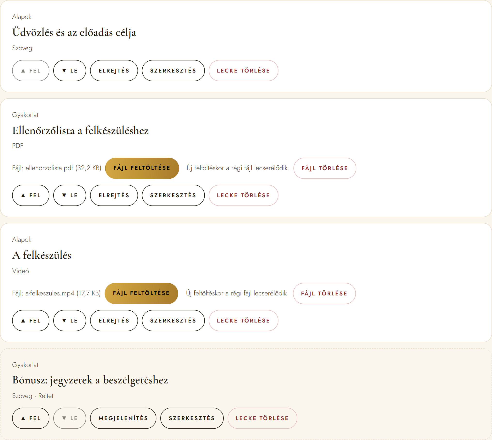
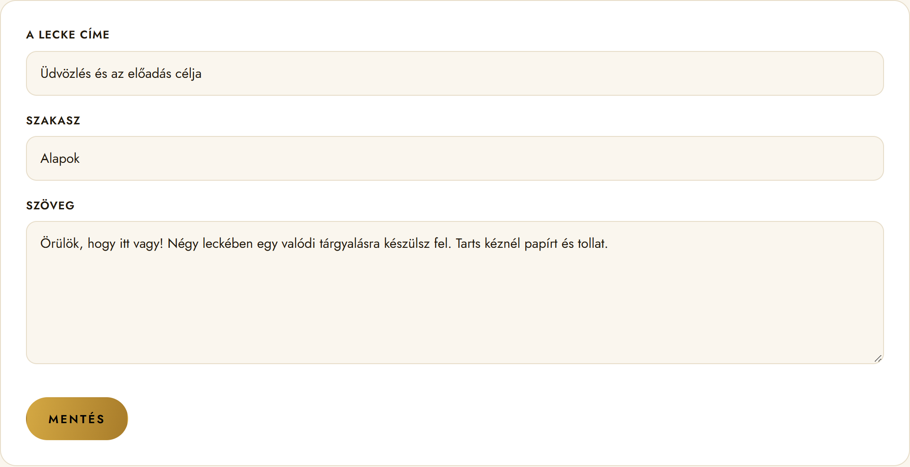
5 Közzététel, archiválás, törlés
Egy előadás a következő három állapot egyikében van:
| Állapot | A vásárlók számára | Lehetséges lépések |
|---|---|---|
| Piszkozat | nem látható, nem vásárolható meg | Közzététel (Kész), törlés |
| Közzétéve | szerepel az előadások listájában, megvásárolható | Archiválás |
| Archiválva | már nem szerepel az előadások listájában, nem vásárolható meg; az érvényes hozzáféréssel rendelkező vásárlók továbbra is megnyithatják | újbóli közzététel (Kész) |
Közzététel
- Az előadás oldalának alján kattints a Kész gombra.
- Megjelenik a kérdés: „Biztosan? Az előadás ezután mindenki számára látható lesz.” Ha az előadásnak nincs látható leckéje, a platform arra is figyelmeztet, hogy a vásárlók üres előadást kapnának.
- Erősítsd meg az Igen gombbal. Üzenet: „Kész! Az előadás közzé lett téve.”
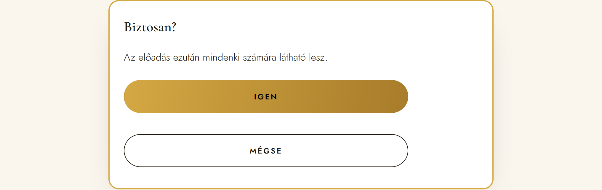
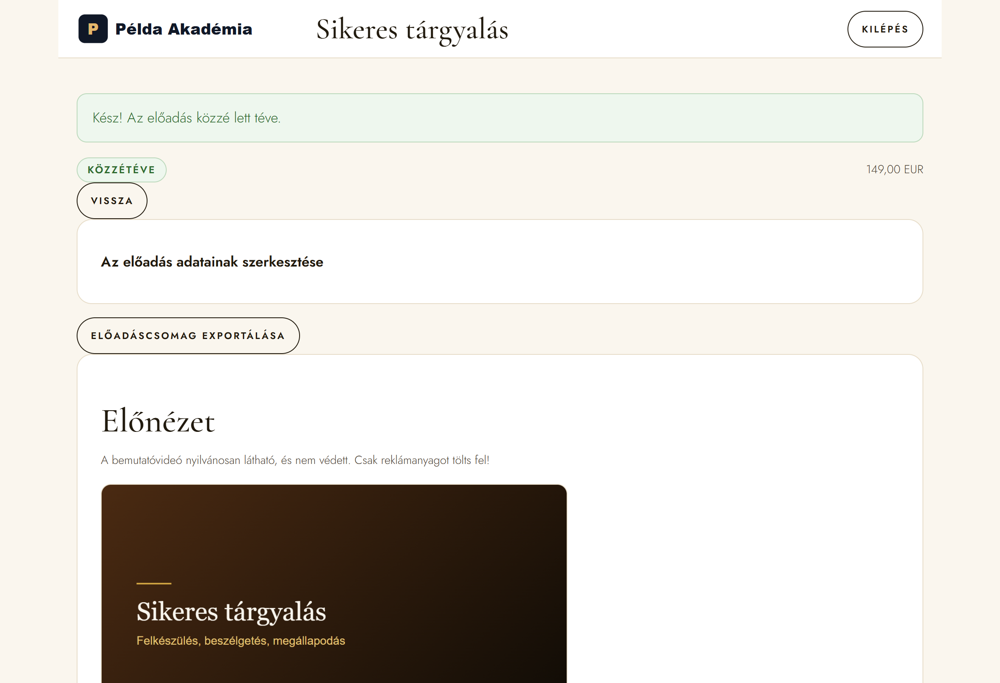
Archiválás
A közzétett előadásnál ott van az Archiválás gomb. Az „Archiválod ezt az előadást? A meglévő résztvevők továbbra is hozzáférnek.” kérdés után az előadás eltűnik az előadások listájából, és többé nem vásárolható meg. A Kész gombbal később ismét közzéteheted.
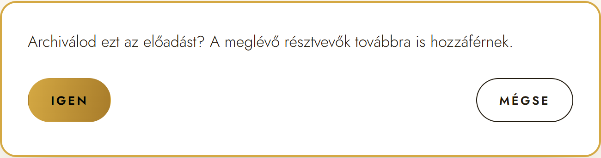
Törlés
Az Előadás törlése csak olyan piszkozatnál érhető el, amelyhez soha nem volt rendelés, hozzáférés vagy előfizetés. Törlődik az előadás, az összes lecke és az összes fájl – véglegesen. Minden más esetben a platform ezt jelzi: „Ez az előadás nem törölhető. Kérlek, archiváld inkább.”
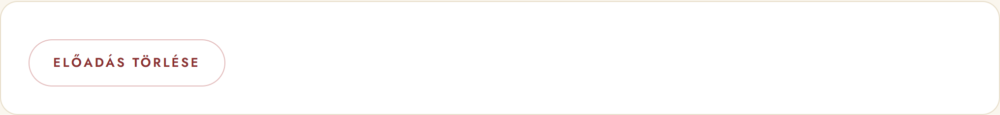
6 Rendelések és hozzáférések
A fizetős vásárlások automatikusan zajlanak: ha a Stripe fizetési szolgáltató megerősít egy fizetést, a platform létrehozza a rendelést, megnyitja az előadást, és elküldi a vásárlónak a vásárlási visszaigazolást. Ehhez neked semmit nem kell tenned. Beavatkoznod csak az ellenőrzendő fizetéseknél kell.
Ellenőrzendő fizetések
Ha egy beérkezett fizetés nem egyezik az előadás adataival, a platform nem ad hozzáférést, hanem a rendelést az Ellenőrzendő fizetések mezőbe teszi, és e-mailben értesít. Látható az előadás, a vásárló, az összeg, az időpont és az ok.
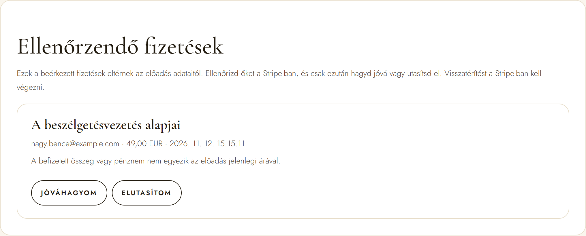
| Ok (ahogy megjelenik) | Tipikus előzmény |
|---|---|
| A befizetett összeg vagy pénznem nem egyezik az előadás jelenlegi árával. | Az árat akkor módosították, amikor egy vásárló már a fizetési oldalon volt (13. fejezet). |
| Az előfizetés számlázási időszaka nem egyezik az előadás jelenlegi beállításával. | Az előfizetés időszakát módosították. |
| Erre az előadásra már volt érvényes vásárlás vagy futó előfizetés … | Kétszeres fizetés; további hozzáférés nem jár. |
| A fizető Stripe-ügyfél nem egyezik a felhasználóval. / Az előadás, illetve a felhasználó már nem létezik. | A hozzárendelés nem egyértelmű. |
Először ellenőrizd a fizetést a Stripe-fiókban. Utána:
- Jóváhagyom: A vásárló tartós hozzáférést kap, és e-mailben megkapja a vásárlási visszaigazolást. Ha ehhez az előadáshoz futó előfizetése van, azt a platform a Stripe-nál leállítja. Előfizetés fizetése itt nem hagyható jóvá („Előfizetést csak a Stripe igazolt fizetése után lehet aktiválni.”).
- Elutasítom: Nincs hozzáférés. A pénz egyelőre beérkezett marad – a visszatérítést a Stripe-ban végzed el. Előfizetés fizetése esetén a platform az előfizetést a Stripe-nál leállítja.
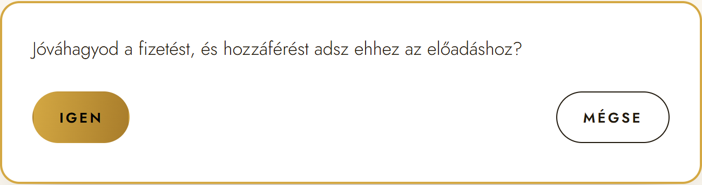
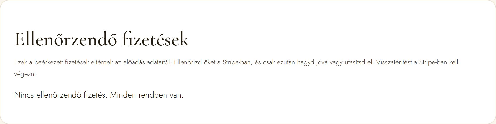
Egy előadás hozzáférései
Minden előadás oldalán a Hozzáférések mező felsorolja az összes hozzáféréssel rendelkező fiókot: e-mail-cím, dátum és eredet (Fizetés, Előfizetés „Hozzáférés vége” adattal, vagy Ingyenes hozzáférés). „Ingyenes hozzáférés” áll az általad megadott hozzáféréseknél és az ingyenes előadásokhoz tartozó hozzáféréseknél.
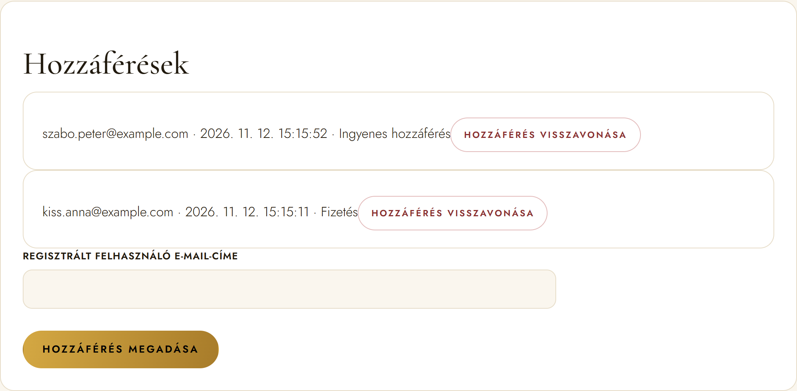
Hozzáférés megadása
- Írd be a címet a Regisztrált felhasználó e-mail-címe mezőbe. A fióknak már léteznie kell; különben a platform ezt jelzi: „Ezzel az e-mail-címmel nincs regisztrált felhasználó.”
- Kattints a Hozzáférés megadása gombra. A hozzáférés tartós („Ingyenes hozzáférés” eredet).
Ha a fióknak már van előfizetéses hozzáférése, az tartós hozzáféréssé alakul, a futó előfizetést pedig a platform előbb a Stripe-nál leállítja. Ha a leállítás a Stripe-nál nem sikerül, semmi sem változik.
E-mail a vásárlónak: A hozzáférés megadása után a vásárló automatikusan rövid e-mailt kap a fiókja nyelvén. Ebben a platform közli, hogy ingyenes hozzáférést kapott az előadáshoz, megnevezi az előadás címét, és hivatkozást küld az előadásaihoz. Az időközben törölt fiókok nem kapnak e-mailt.
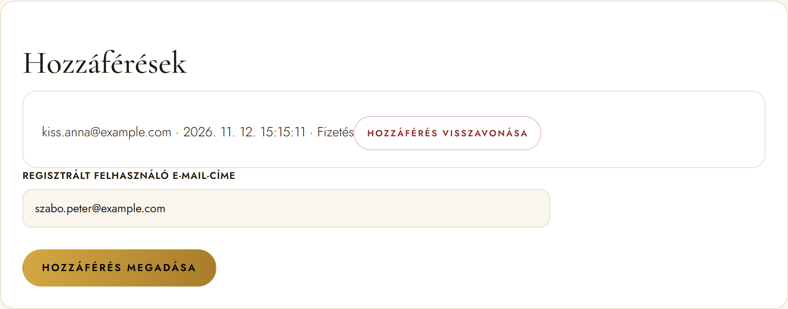
Hozzáférés visszavonása
Egy bejegyzés mellett a Hozzáférés visszavonása visszakérdez: „Biztosan visszavonod a hozzáférést? A rendelés megmarad. Ha előfizetésről van szó, azt a Stripe-nál azonnal leállítjuk; a pénzt nem térítjük vissza automatikusan.” Az Igen után a vásárló már nem tudja megnyitni az előadást. Szükség esetén a visszatérítést a Stripe-ban végzed el.
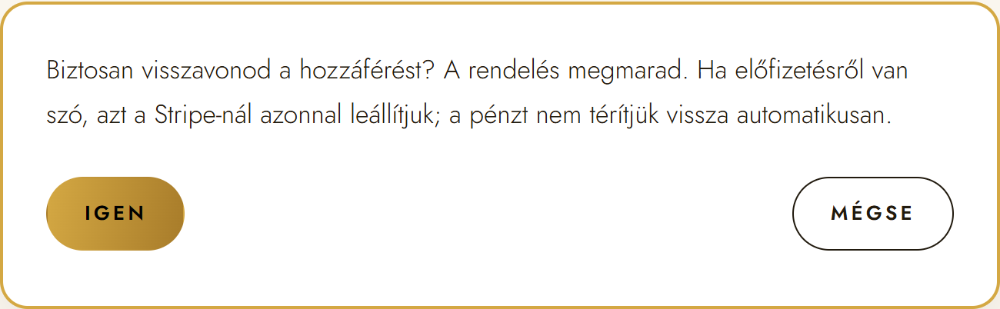
Egy előadás előfizetései
Előfizetéses előadásoknál az Előfizetések mező minden előfizetést mutat e-mail-címmel, állapottal (Aktív, Fizetésre vár, Lemondva, Megszűnt), a kifizetett időszak végével, és adott esetben „A kifizetett időszak végén megszűnik” jelzéssel. Lemondani a vásárlók maguk tudnak; az admin felületen nincs külön lemondás gomb. Az admin felületről előfizetést csak a Hozzáférés visszavonása szüntet meg.
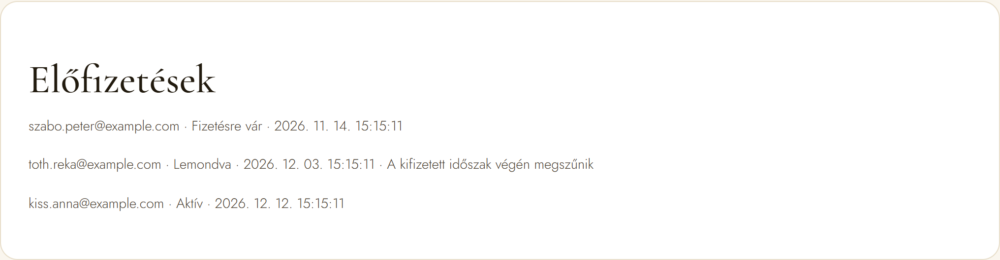
7 Visszatérítések és elállás
Visszatérítések
Az admin felületen nincs visszatérítés gomb. A visszatérítéseket a Stripe-fiókban végzed el. A Stripe jelzi őket a platformnak, a platform pedig automatikusan rögzíti őket:
| Visszatérítés a Stripe-ban | Következmény a platformon |
|---|---|
| teljes | A rendelés „visszatérítve” lesz, az ebből a fizetésből származó hozzáférés megszűnik (az ingyenes hozzáférés megmarad), „Visszatérítés” esemény. |
| részleges | A platform a rendelésnél rögzíti; a hozzáférés megmarad. |
| Visszaterhelés a vásárló bankja részéről | A rendelés ellenőrzendő fizetéssé válik, a hozzáférés megszűnik. |
Ha a Stripe-egyeztetés (9. fejezet) nem teljesen rögzített visszatérítést talál, felajánlja a Visszatérítés utólagos rögzítése lehetőséget.
Elállás a vásárlók részéről
A vásárlók az elállást maguk jelentik be a fiókjukban. A platform automatikusan dönt olyan szabályok szerint, amelyek a szoftverben vannak rögzítve. Ezek a szabályok az admin felületen nem állíthatók be; módosításuk a szoftver módosítását jelenti.
| Rögzített szabály | Eredmény |
|---|---|
| Határidő (a szoftver alapbeállítása: a rendeléstől számított 14 nap) | A platform alapértelmezésként 14 napos időszakot vizsgál; a később beérkező nyilatkozatokat automatikusan elutasítja. A törvényes jogok ettől függetlenül fennállhatnak. |
| A vásárló a vásárláskor hozzájárult az azonnali megkezdéshez (jelölőnégyzet), majd megnyitotta az előadás tartalmát | automatikus elutasítás |
| Előfizetés | automatikus elállás csak az előfizetés első fizetésére |
| minden feltétel teljesül | automatikus teljes visszatérítés a Stripe-on keresztül, a hozzáférés megszűnik, az előfizetés leáll |
Minden elállási nyilatkozatról e-mailt kapsz az előadással, a vásárlóval, a rendelésszámmal, az összeggel, az időponttal és az eredménnyel. Ha a visszatérítés technikailag nem sikerül, az e-mail ezt is közli („… de a visszatérítés nem sikerült. Kérlek, ellenőrizd a Stripe-ban, és szükség esetén térítsd vissza kézzel.”), az eset megjelenik a Nyitott elállások mezőben, és a Nyitott ellenőrzések mutató is beszámítja. Automatikus elutasítás esetén vizsgáld meg a nyilatkozatot, a lehetséges törvényes jogokat is beleértve; kétség esetén kérj jogi tanácsot.
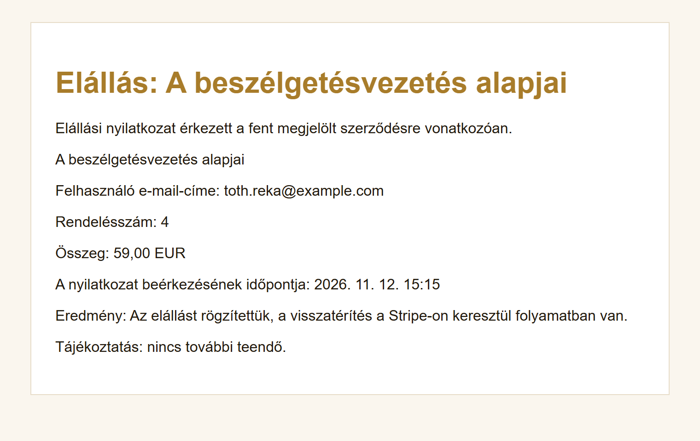
Nyitott elállások
Az áttekintésen a Nyitott elállások mező mutatja azokat az elállásokat, amelyek visszatérítése még folyamatban van, vagy nem sikerült – a legújabb elöl. Minden bejegyzés megadja az előadást, a vásárló e-mail-címét, a rendelésszámot, az összeget, az időpontot és az állapotot („Az elállási nyilatkozat feldolgozás alatt áll.” vagy „… de a visszatérítés nem sikerült …”). Ezek a bejegyzések beszámítanak a Nyitott ellenőrzések mutatóba; ha nincs nyitott elállás, a mezőben ez áll: „Nincs nyitott elállás.”
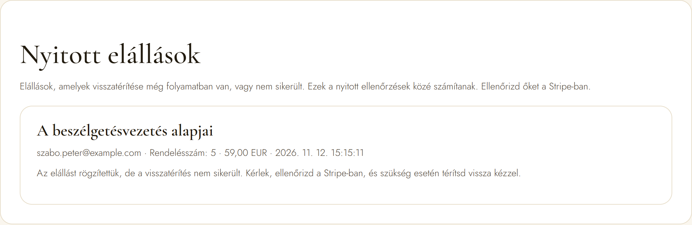
- A lista csak megtekintésre szolgál, gombok nincsenek benne. Minden bejegyzést ellenőrizz a Stripe-ban, és szükség esetén térítsd vissza kézzel.
- A „feldolgozás alatt” álló elállást a platform automatikusan tovább kezeli: ha a visszatérítés megtörtént, eltűnik a listából; ha nem sikerül, „nem sikerült” állapotra vált.
- A „nem sikerült” bejegyzés a listában és a mutatóban marad akkor is, ha a Stripe-ban már visszatérítetted. Jegyezd fel a lezárt eseteket; kérdés esetén a technikai támogatás segít.
- A lezárt elállások (visszatérítve vagy elutasítva) nem jelennek meg ebben a listában. Ezeket az e-mailről, a Visszatérítések mutatóról és a Rendelések és események listáról ismered fel („Visszatérítés” eseménytípus).
8 Vásárlók és fiókok
A vásárlók maguk hozzák létre és maguk kezelik a fiókjukat (e-mail-cím, jelszó, adatkérés, törlés). Az admin felületen nincs vásárlói lista, és nincs lehetőség vásárlói fiókok létrehozására, módosítására, letiltására vagy törlésére.
Amit üzemeltetőként a vásárlókról látsz és megtehetsz:
- Rendelések és események: regisztrációk, megerősített e-mail-címek, vásárlások, előfizetések, visszatérítések és törölt fiókok, e-mail-cím szerinti kereséssel (9. fejezet).
- Hozzáférések és Előfizetések előadásonként, hozzáférés megadása és visszavonása (6. fejezet).
- Ellenőrzendő fizetések a vásárló e-mail-címével (6. fejezet).
9 Események és naplók
Rendelések és események
Az áttekintésen található az összes esemény listája, a legújabb elöl, oldalanként 50 (Előző / Következő). Minden sor mutatja az időpontot (Budapest), az eseményt, az előadást, az összeget, a vásárlót és az állapotot.
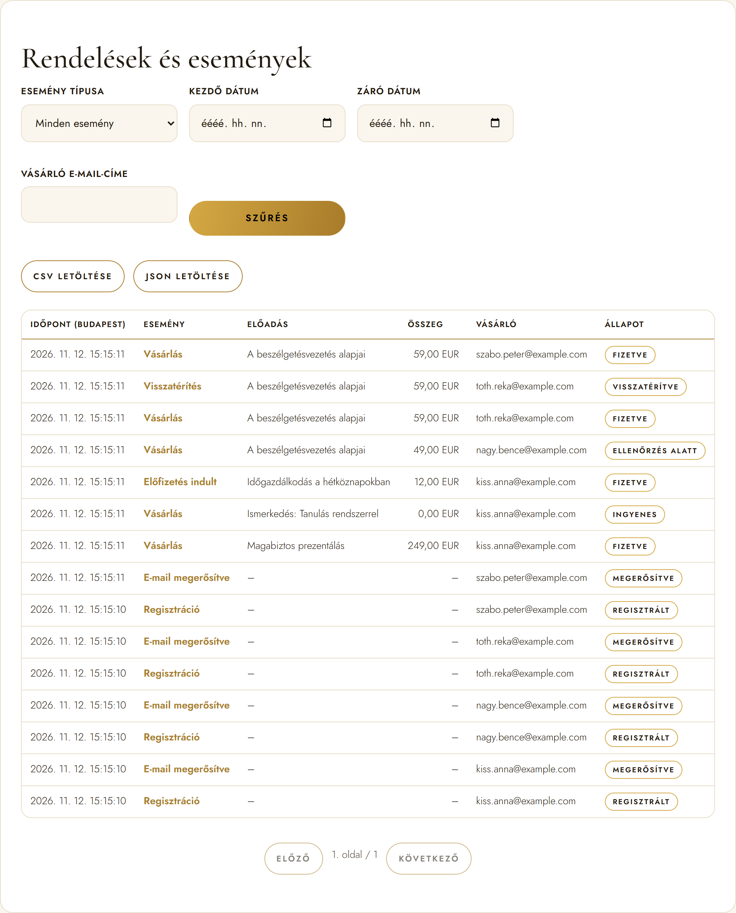
| Esemény | Lehetséges állapotok |
|---|---|
| Regisztráció, E-mail megerősítve | Regisztrált, Megerősítve |
| Vásárlás | Fizetve, Ingyenes, Ellenőrzés alatt |
| Visszatérítés | Visszatérítve, Részleges visszatérítés, Visszatérítés sikertelen; visszaterhelésnél: Banki megkeresés, Vitatott fizetés, Vita megnyerve, Vita elvesztve |
| Előfizetés indult, Előfizetés lemondva, Előfizetés véget ért | Fizetve, Ellenőrzés alatt, Megszűnt |
| Fiók törölve | – |
Szűrés: Válaszd ki az esemény típusát, a kezdő dátumot, a záró dátumot és a vásárló e-mail-címét, majd kattints a Szűrés gombra. Exportálás: A CSV letöltése, illetve a JSON letöltése fájlba menti a szűrt eseményeket (legfeljebb 10 000 sor). Az események egy megőrzési idő után automatikusan törlődnek (a szoftver alapbeállítása: 730 nap). A szükséges megőrzési időket az üzemeltetőnek jogilag ellenőriztetnie kell.
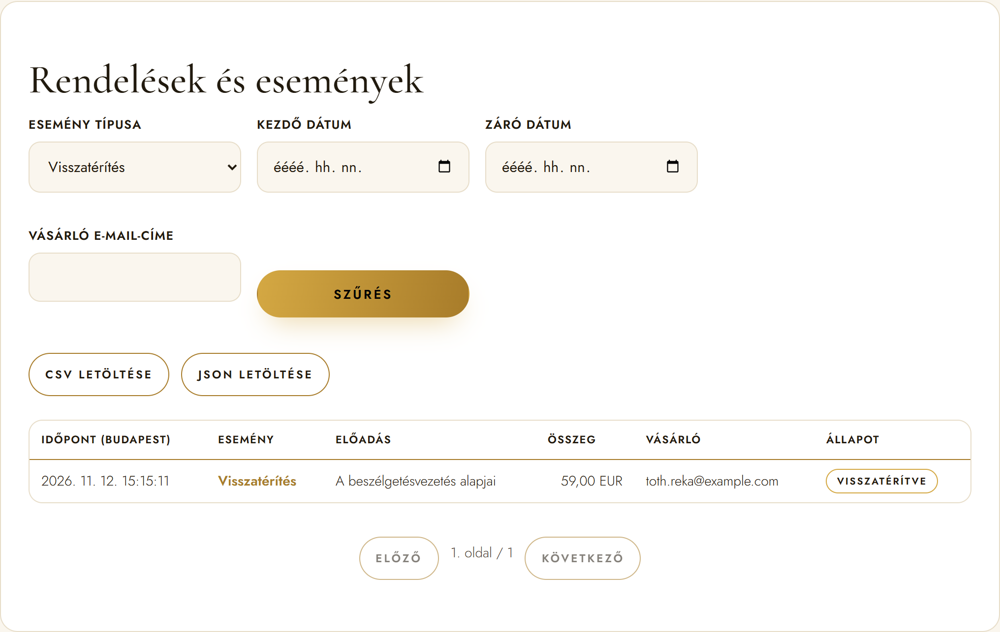
Stripe-egyeztetés
Az egyeztetés összeveti a platform rendeléseit a Stripe-fiók adataival (időszak: az utolsó 35 nap). Automatikusan fut; az Egyeztetés most gombbal azonnal elindítod. Az oldal mutatja az utolsó egyeztetést, a talált eltéréseket és a korábbi egyeztetéseket. Eltérés esetén e-mailt kapsz.
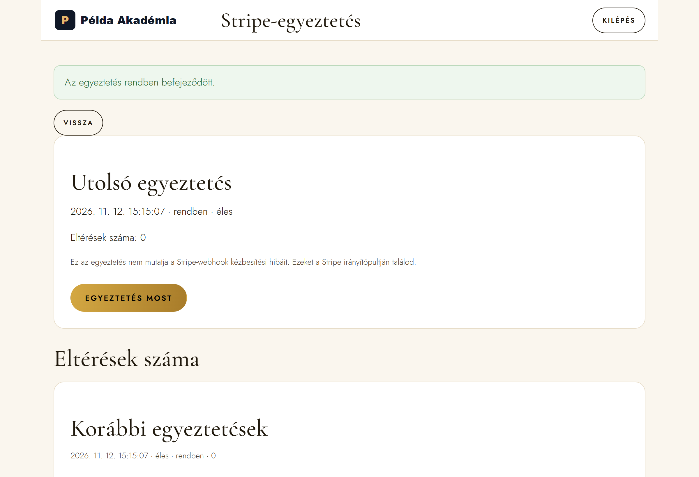
| Lehetséges eltérés | Teendő |
|---|---|
| A Stripe szerint kifizették, de a platformon nincs rendelés. | Ellenőrizd a Stripe-ban; a rendelés csak kézi ellenőrzés után állítható helyre. |
| A platform fizetettnek jelöli, de a Stripe-ban nincs igazolt fizetés. | Ellenőrizd a Stripe-ban. |
| A Stripe-visszatérítés nincs teljesen átvezetve a platformon. | Visszatérítés utólagos rögzítése (a rendelés és a hozzáférés változhat). |
| Vitatott fizetés (visszaterhelés), a rendelés még fizetettként szerepel. | Ellenőrizd a Stripe-ban, és vond vissza a hozzáférést. |
| Egy már megszűnt előfizetés a Stripe-ban még futott. | Semmi – a platform utólag leállította. |
Az oldal megjegyzése: a Stripe-értesítések kézbesítési hibáit ez az egyeztetés nem mutatja; ezeket a Stripe irányítópultján találod.
Admin-bejelentkezések
A napló az admin felületre irányuló utolsó 100 belépési kísérletet mutatja időponttal, eredménnyel (például „Sikeres bejelentkezés”, „Sikertelen bejelentkezés”, „Ideiglenesen zárolva”), rövidített e-mail-címmel és rövidített hálózati címmel. A váratlan bejegyzések okot adnak a jelszó megváltoztatására és a technikai támogatás értesítésére.
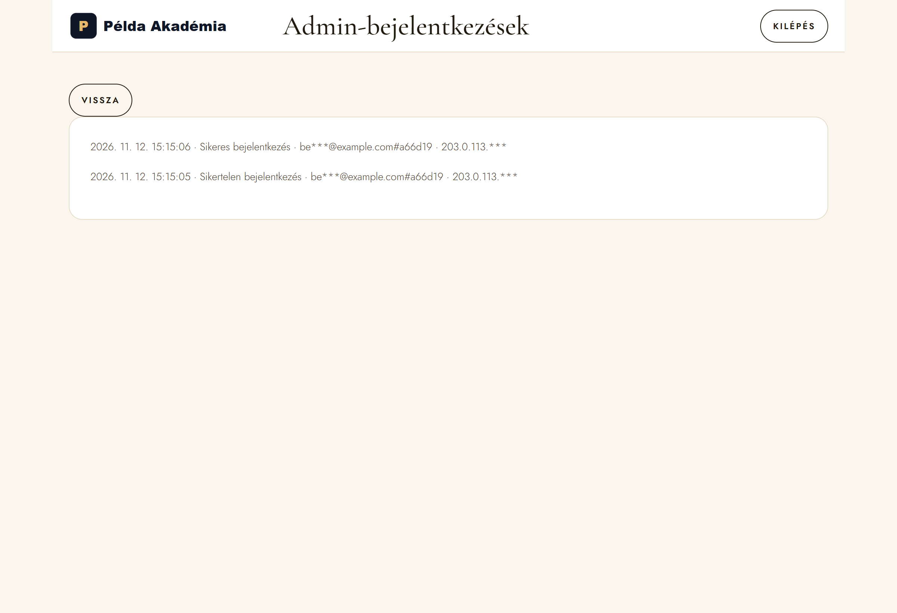
10 Az értékesítés szüneteltetése
Az áttekintésen az Értékesítés gombbal ideiglenesen leállítod az összes új fizetős vásárlást (egyszeri vásárlás és előfizetés), például amíg az előadásokat átdolgozod.
- Adj meg egy indoklást (1–200 karakter).
- Kattints az Értékesítés szüneteltetése gombra, és erősítsd meg az Igen gombbal.
- A folytatáshoz kattints az Értékesítés folytatása gombra, és erősítsd meg.
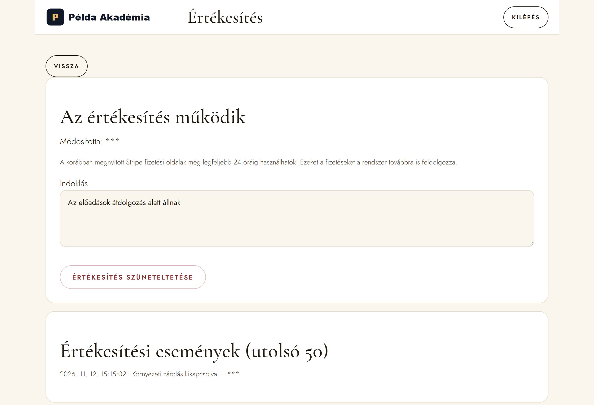
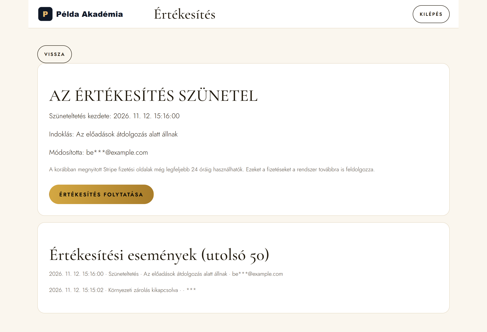
- A vásárolni szándékozó vásárlók ezt látják: „Az értékesítés átmenetileg szünetel. Kérlek, nézz vissza később.”
- A már megvásárolt előadások továbbra is használhatók, a futó előfizetések tovább futnak.
- Az ingyenes előadások a szünet alatt is megnyithatók.
- A Stripe már megnyitott fizetési oldalai még legfeljebb 24 óráig használhatók; ezeket a fizetéseket a rendszer továbbra is feldolgozza.
- Az oldal mutatja a kezdetet, az indoklást és azt, hogy ki szüneteltetett, alatta pedig az utolsó 50 értékesítési eseményt.
- Ha a szüneteltetés technikailag elő van írva, fordulj a technikai támogatáshoz.
11 Biztonsági mentés
A Biztonsági mentés alatt (eszközök) látod, hogy a biztonsági mentés aktív-e, mikor futott az utolsó sikeres mentés, valamint a legutóbbi mentések listáját (időpont, típus, eredmény, fájlnév, helyi és külső tároló).
- A platform automatikusan ment (induláskor, majd rendszeresen). Ezeknek a bejegyzéseknek a neve „automatikus”.
- A Mentés most azonnal készít egy további mentést („kézi”). Ha már fut egy, a platform ezt jelzi.
- A Legutóbbi mentés letöltése titkosított fájlként menti el az utolsó sikeres mentést. A megnyitás és a visszaállítás a technikai támogatás feladata. A titkosított mentési fájlokat őrizd biztonságos helyen, és ne add tovább jogosulatlanul.
- „A biztonsági mentés ki van kapcsolva” azt jelenti: a beállításkor nem kapcsolták be. Ilyenkor fordulj a technikai támogatáshoz.
- Ha probléma van a mentéssel, a platform figyelmeztető e-mailt küld a beállított címekre.
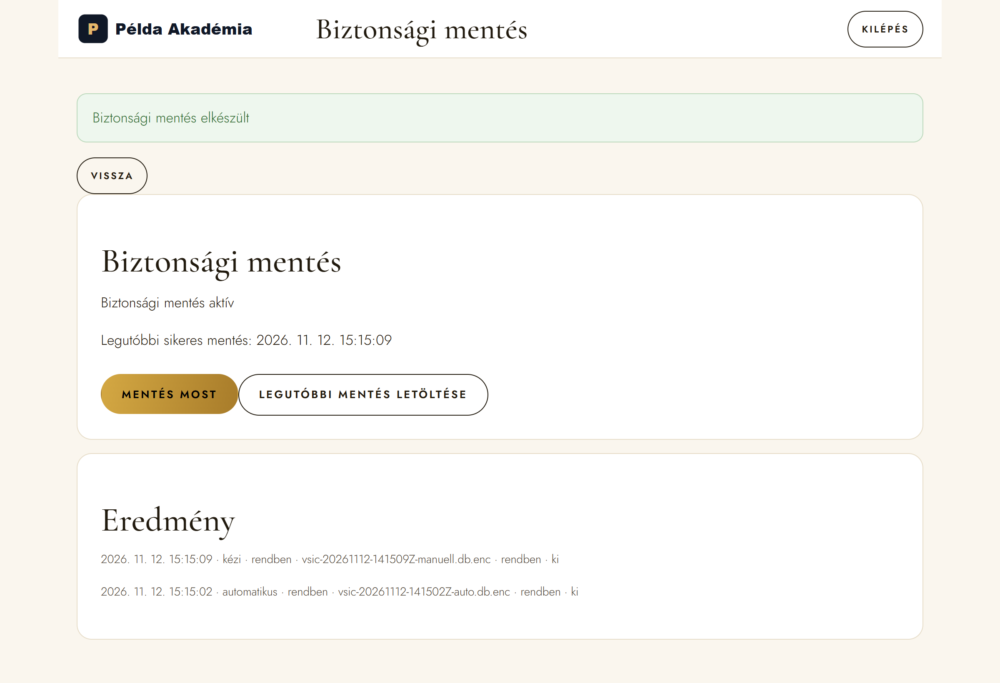
12 Egy tipikus folyamat
Így születik meg egy új előadás az első kattintástól az első rendelésig – az ábrákon látható „Sikeres tárgyalás” példáján.
| Lépés | Mit teszel | Eredmény |
|---|---|---|
| 1. Előadás létrehozása | Új előadás: cím, leírás, EUR pénznem, 149,00 eurós ár, Mentés | Piszkozat, a vásárlók számára nem látható (8., 9. ábra) |
| 2. Leckék létrehozása | Négy lecke létrehozása (szöveg, videó, PDF, szöveg); a bónuszlecke elrejtése | A leckék listája (17. ábra) |
| 3. Médiafájlok feltöltése | Videó és PDF a Fájl feltöltése gombbal | Megjelenik a fájl neve és mérete (16. ábra) |
| 4. Előnézet | Borítókép és „Mit fogsz megtanulni” | Az előadás oldala teljes az érdeklődők számára (11. ábra) |
| 5. Az ár ellenőrzése | Az előadás adatainak szerkesztése: ár, adott esetben előfizetési díj és időszak | Az árat a közzététel előtt gondosan ellenőrizd (13. fejezet) |
| 6. Közzététel | Kész → Igen | Az előadás látható és megvásárolható (20. ábra) |
| 7. A rendelés ellenőrzése | Áttekintés: mutatók, „Rendelések és események” lista, adott esetben Ellenőrzendő fizetések | A kifizetett vásárlások automatikusan meg vannak nyitva (32. ábra) |
| 8. Hozzáférés kezelése | Az előadás oldala → Hozzáférések: szükség esetén hozzáférés megadása vagy visszavonása | 26–28. ábra |
13 A változtatások hatásai
Az alábbi táblázat leírja, mit jelent egy változtatás a meglévő vásárlóknak és a folyamatban lévő fizetéseknek.
| Változtatás | Hatás |
|---|---|
| Az egyszeri ár módosítása | A meglévő rendelések és hozzáférések változatlanok maradnak. Az új vásárlások az új árat fizetik. Aki a fizetési oldalt a módosítás előtt nyitotta meg, és utána a régi áron fizet, nem kap automatikus hozzáférést: a fizetés az ellenőrzendő fizetések közé kerül („az összeg vagy a pénznem nem egyezik”). |
| Az előfizetési díj módosítása | A futó előfizetéseket a Stripe továbbra is a korábbi áron hosszabbítja meg; a platform ezeket a hosszabbításokat érvényesnek ismeri el, a hozzáférés megmarad. Az új előfizetések az új árat fizetik. |
| Az előfizetés időszakának módosítása | Az az új előfizetési fizetés, amelynek időszaka nem egyezik a jelenlegi beállítással, az ellenőrzendő fizetések közé kerül. |
| Az előfizetés kikapcsolása (az előfizetési díj törlése) | Új előfizetés már nem köthető. A futó előfizetések tovább hosszabbodnak, ha az összeget erre az előfizetésre már korábban kifizették. |
| Pénznem | A létrehozás után nem módosítható. |
| A cím, a leírás, a leckeszövegek módosítása | Azonnal mindenki számára látható, a vásárlóknak is. |
| Új lecke | Piszkozatban az előadás közzétételével válik láthatóvá. Közzétett vagy archivált előadásban rejtve jön létre; a vásárlók csak a Megjelenítés után látják. |
| Lecke elrejtése | A vásárlók már nem látják a leckét; a rendelések és a hozzáférések megmaradnak. |
| Fájl cseréje vagy törlése | A régi fájl azonnal eltűnik; a vásárlók már csak az új fájlt látják (vagy egyet sem). |
| Előadás archiválása | Már nem szerepel az előadások listájában, nem vásárolható meg. Az érvényes hozzáféréssel rendelkező vásárlók továbbra is megnyitják. Az archiválás előtt megkezdett fizetés ennek ellenére megadja a hozzáférést. Az újbóli közzététel lehetséges. |
| Előadás törlése | Csak rendelés, hozzáférés és előfizetés nélküli piszkozatoknál. Végleges, az összes leckével és fájllal együtt. |
| Lecke törlése | Csak piszkozatokban vagy rejtett leckéknél. Végleges, a fájllal együtt. |
| Hozzáférés megadása | Tartós hozzáférés; a vásárló e-mailt kap. A vásárló ehhez az előadáshoz tartozó futó előfizetését a platform a Stripe-nál leállítja. |
| Hozzáférés visszavonása | A vásárló azonnal elveszíti a hozzáférést. A rendelés megmarad, a platform az előfizetést a Stripe-nál leállítja, automatikus visszatérítés nincs. |
| Az értékesítés szüneteltetése | Nincs új fizetős vásárlás; az ingyenes megnyitás továbbra is lehetséges, a meglévő hozzáférések és előfizetések megmaradnak (10. fejezet). |
14 Az admin felület funkciói
Az összes funkció áttekintése, és hogy mit változtatnak meg. Egyetlen szerepkör van (Admin); minden funkció minden admin fiók számára elérhető.
| Funkció | Tartalom | Rendelések | Hozzáférések |
|---|---|---|---|
| Előadás létrehozása, az előadás adatainak szerkesztése, előnézet | igen | – | – |
| Lecke létrehozása, szerkesztése, mozgatása, megjelenítése/elrejtése, törlése | igen | – | – |
| Fájl feltöltése, cseréje, törlése | igen | – | – |
| Előadáscsomag importálása / exportálása | új piszkozat / csak olvasás | – | – |
| Közzététel, archiválás | láthatóság | – | – |
| Előadás törlése (csak piszkozat) | igen, véglegesen | – | – |
| Ellenőrzendő fizetés jóváhagyása | – | „fizetve” állapot | a hozzáférést megkapja |
| Ellenőrzendő fizetés elutasítása | – | „elutasítva” állapot | nincs hozzáférés |
| Hozzáférés megadása / visszavonása | – | változatlan | igen (az előfizetést a platform adott esetben a Stripe-nál leállítja) |
| Visszatérítés utólagos rögzítése (egyeztetés) | – | igen | változhat |
| Értékesítés szüneteltetése / folytatása | – | nincs új vásárlás | – |
| Események megtekintése és exportálása, nyitott elállások megtekintése, egyeztetés indítása, admin-bejelentkezések megtekintése | – | csak olvasás | csak olvasás |
| Biztonsági mentés indítása és letöltése | – | – | – |
A visszatérítések, az előfizetések lemondása és magának a fizetésnek a módosítása nem az admin felületen történik, hanem a Stripe-fiókban, illetve a vásárlók által.
15 Súgó és gyakori üzenetek
| Üzenet | Jelentése és teendő |
|---|---|
| Kérlek, az árat egész számként add meg, például 39900. | HUF-os előadás: csak egész forint, tizedesjel és pénznemjel nélkül. |
| Kérlek, az árat legfeljebb két tizedesjeggyel add meg, például 49,00. | EUR-s előadás: legfeljebb két jegy a vessző vagy pont után, ezres elválasztó és pénznemjel nélkül. |
| Az előfizetéshez az árat és az időszakot együtt add meg, vagy hagyd mindkettőt üresen. | Egészítsd ki vagy töröld az előfizetési díjat. |
| Ingyenes előadáshoz nem adható előfizetés. | Állíts be árat, vagy töröld az előfizetési díjat. |
| A lecke típusa nem módosítható, amíg fájl tartozik hozzá. | Előbb töröld a fájlt, vagy hozz létre új leckét. |
| A fájl túl nagy. | Használj kisebb fájlt. |
| Ez az előadás nem törölhető. Kérlek, archiváld inkább. | Az előadás közzé van téve, vagy volt hozzá rendelés/hozzáférés: Archiválás. |
| Ez a lecke nem törölhető. Rejtsd el inkább. | Használd az Elrejtés gombot. |
| Ezzel az e-mail-címmel nincs regisztrált felhasználó. | A vásárlónak előbb regisztrálnia kell. |
| Az előfizetést nem sikerült leállítani a Stripe-nál, ezért semmi nem változott. | Próbáld újra később; semmi sem változott. |
| Ez a fizetés már nem vár ellenőrzésre. | Már feldolgozták; töltsd újra az oldalt. |
| Már folyamatban van egy mentés. / Az egyeztetés már folyamatban van. | Várj egy kicsit, és töltsd újra az oldalt. |
| Nem sikerült kapcsolódni a szerverhez. | Ellenőrizd az internetkapcsolatot, és próbáld újra. |
| Nincs jogosultságod. | Lépj be az admin fiókkal. |
E-mailek, amelyeket üzemeltetőként kapsz
- értesítések az eladásokról és az ellenőrzendő fizetésekről,
- e-mail minden elállási nyilatkozatról (7. fejezet),
- figyelmeztetések a Stripe-egyeztetésről, a biztonsági mentésről, az értékesítés szüneteltetéséről és az admin hozzáférést érintő biztonsági eseményekről.
Hogy ezek az e-mailek mely címekre mennek, azt a beállítás határozza meg. Technikai kérdésekkel, új admin fiókokkal és minden, a beállítást érintő üggyel fordulj a technikai támogatáshoz (telepítési kézikönyv).